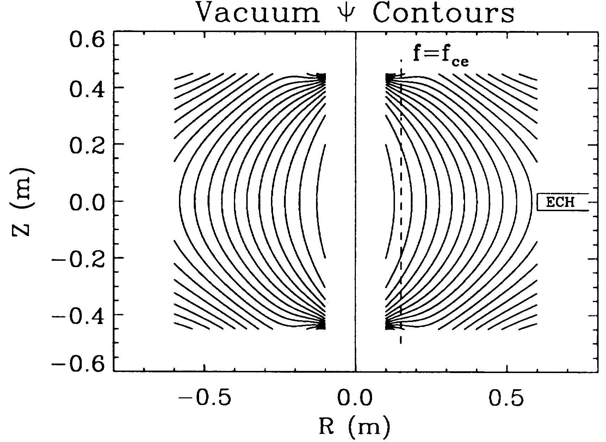
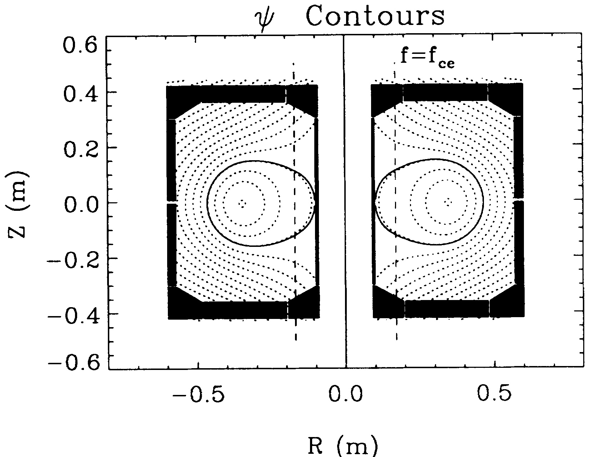
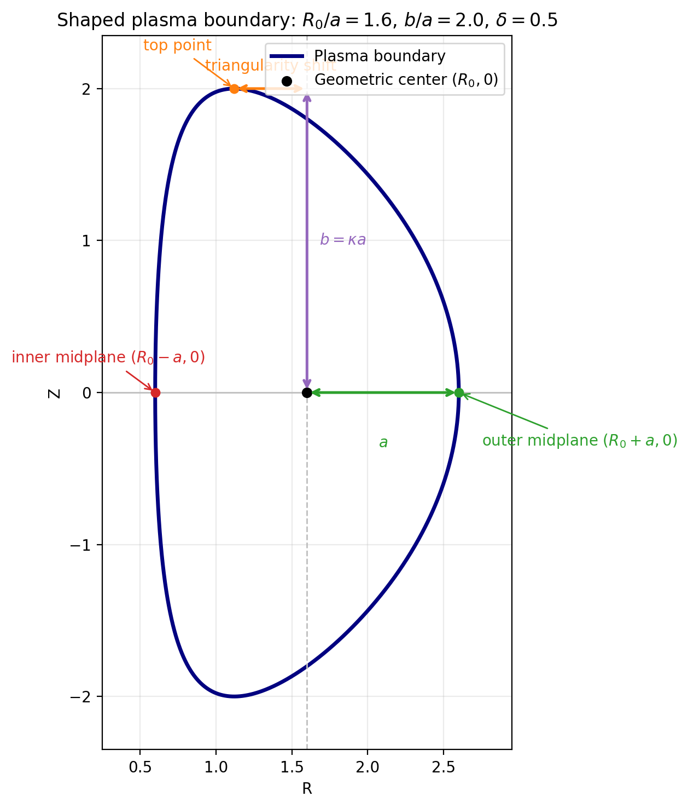
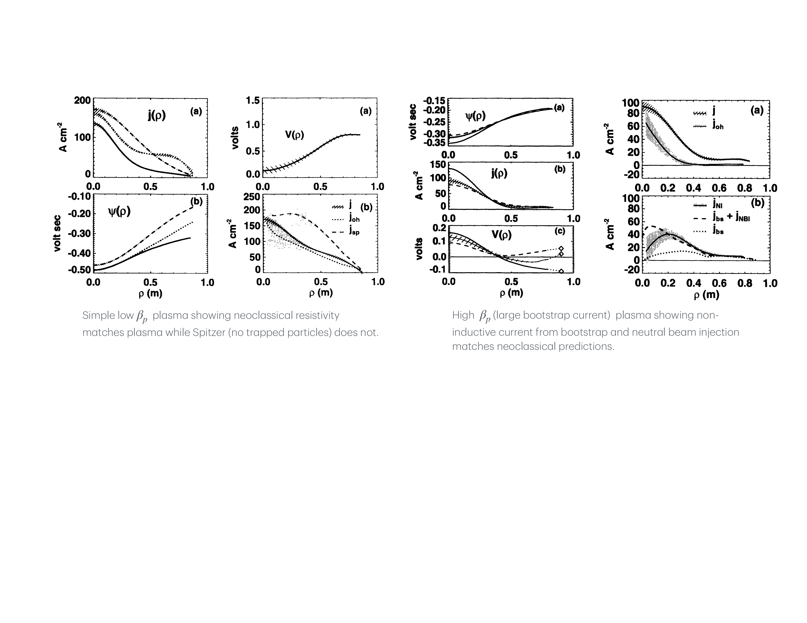
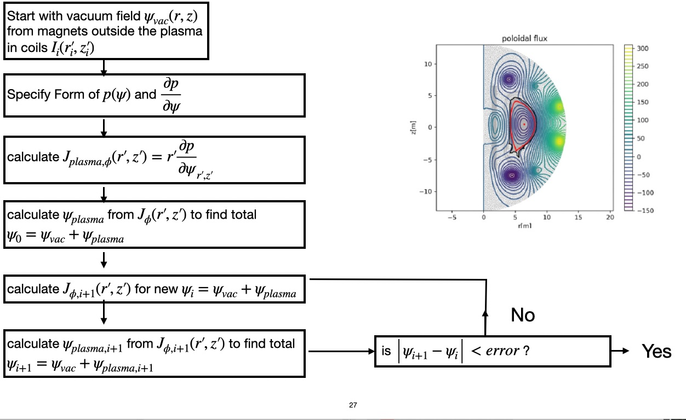

Figure 14.3: (a) an inboard wall limited plasma, (b) a positive triangularity double null plasma
and (c) a negative triangularity single null plasma.
This lecture is about what an equilibrium really gives you, and how experimentalists infer it.
- 1.
- It collects the geometric quantities attached to an axisymmetric equilibrium: flux coordinates, safety factor, flux-surface averages, shaping, and current profiles.
- 2.
- It shows how the Grad–Shafranov equation (12.28) becomes both a forward problem and an inverse problem.
- 3.
- It treats two genuinely classic examples: Solov’ev equilibria as a semi-analytic family, and EFIT-style reconstruction as the moment when equilibrium solving became routine experimental analysis.
Magnetic equilibrium reconstruction lies at the heart of experimental magnetic-fusion research. Nearly every quantitative comparison between theory and experiment—stability, transport, confinement, current drive, energetic particles, and wave physics—requires a map of the flux surfaces and the current density that generated them. The previous equilibrium lectures established the force-balance logic and the Grad–Shafranov equation. The present lecture asks a different question: once an axisymmetric equilibrium exists, how do we describe it compactly, and how do we infer it from diagnostics?
Closed surfaces, magnetic axis, and separatrix structure. In an axisymmetric toroidal plasma the generic integrable topology consists of nested flux surfaces surrounding a magnetic axis. In a poloidal cross-section the magnetic axis appears as an \(O\)-point, that is, an elliptic fixed point of the field-line map. Divertor equilibria introduce \(X\)-points, which are hyperbolic fixed points where the poloidal field vanishes and the separatrix branches. This distinction matters physically: closed surfaces confine the core plasma, whereas open field lines in the scrape-off layer intersect material surfaces.


There are really three historical steps behind this lecture. First came the recognition, due to Grad and Shafranov, that isotropic axisymmetric equilibrium reduces to a single elliptic equation for \(\psi (R,Z)\). Second came analytic families, especially Solov’ev equilibria, that made shaping and free-boundary thinking concrete. Third came the marriage of free-boundary equilibrium solvers with internal magnetic-pitch measurements from motional Stark effect (MSE) polarimetry. Levinton’s PBX-M paper showed that the internal pitch angle could be measured locally, while the DIII-D work of Rice and collaborators made the EFIT+MSE combination a practical route to routine \(q(\psi )\) reconstruction Lao et al. [1985a], Levinton et al. [1989], Rice [1997], Cerfon and Freidberg [2010].
Field-line topology and rational surfaces. Away from separatrices, each flux surface may be labeled by the safety factor \(q(\psi )\), the ratio of toroidal to poloidal winding. When \(q\) is irrational, a field line never closes and densely fills the surface. When \(q=m/n\) is rational, the field line closes after finitely many turns; those rational surfaces are where magnetic islands arise most naturally once axisymmetry is weakly broken. In that sense the equilibrium geometry already contains the seeds of later tearing and resonant-MHD physics.
Choose a flux-surface label. Several equivalent radial labels are common:

Plasma shape and the last closed flux surface. In a fixed-boundary calculation the last closed flux surface is given in advance. In a free-boundary calculation it emerges from force balance plus the external coil set. A widely used parameterization of a shaped plasma boundary is
where \(a\) is the minor radius, \(\kappa \) is the elongation, and \(\delta \) is the triangularity. These shape parameters enter almost every equilibrium data set produced for tokamak analysis.
Derive the safety factor. Starting from the axisymmetric field representation
Derive \(V'(\psi )\) and a useful alternative form of \(q\). Consider the thin shell between \(\psi \) and \(\psi +\delta \psi \). Let \(\Delta (\ell )\) be the distance between the two surfaces measured normal to the contour in the poloidal plane. Since \(R B_p \Delta = \delta \psi \),
Define the flux-surface average
Large-aspect-ratio estimate. For a circular large-aspect-ratio tokamak, \(R\simeq R_0\) and \(d\ell \simeq r\,d\theta \), so Eq. (14.5) reduces to
Useful figures of merit. Once \(V'(\psi )\) is known, the volume-averaged pressure is
Decompose the current in axisymmetry. Apply Ampère’s law, Eq. (1.11), to Eq. (14.4). One finds
Project the current along the magnetic field. Dot Eq. (14.18) with Eq. (14.4):
Now use the Grad–Shafranov equation (12.28),
Take the flux-surface average. Because \(p'(\psi )\) and \(F'(\psi )\) are flux functions,
Average Ohm’s law over a flux surface. Write the electric field as
If \(\Phi _e\) is single-valued on a closed flux surface, the surface average of the field-line derivative vanishes, so
Why internal measurements are essential for \(q(\psi )\). External magnetic data determine the total plasma current and the boundary shape rather well, but they do not uniquely determine how that current is distributed on flux surfaces. Since the safety factor is a functional of the internal current distribution, \(q(\psi )\) remains weakly constrained unless one brings in internal measurements. MSE is powerful precisely because it measures the local magnetic pitch angle, and those internal pitch-angle constraints can then be folded into EFIT or related Grad–Shafranov solvers to determine the current profile in a way that external magnetics alone cannot Lao et al. [1985a], Levinton et al. [1989], Rice [1997].

Experimental perspective. This is one of the reasons equilibrium reconstruction became so important experimentally. EFIT and MSE are not competing ideas; they are complementary pieces of the same diagnostic chain. EFIT enforces the global free-boundary force balance and coil geometry, while MSE supplies the internal magnetic-pitch information required to pin down \(q(\psi )\). That combined strategy was first established on PBX-M and matured into routine profile analysis on DIII-D Levinton et al. [1989], Rice [1997]. In the DIII-D work shown in Fig. 14.5, time-dependent reconstructions together with internal MSE constraints made it possible to infer the inductive electric field directly and to separate non-inductive current sources. Those measurements were then used to verify and validate models of bootstrap current, neutral-beam current drive, fast-wave current drive, and electron-cyclotron current drive Forest et al. [1994b, 1997, 1996], Petty et al. [1995], Oikawa et al. [2000].
What does it take to “measure” the \(q\)-profile?
Strictly speaking, the \(q\)-profile is inferred, not directly measured: a reconstruction is not a direct measurement. Because \(q(\psi )\sim B_\phi /B_p\), reconstructing \(q(\psi )\) requires the poloidal field \(B_p(\psi )\), and therefore the toroidal current density \(j_\phi (\psi )\), throughout the plasma.
Writing \(f(\psi )\equiv R B_\phi \), the Grad–Shafranov source is \[ -\Delta ^\star \psi = R\,p'(\psi ) + \frac {1}{\mu _0 R}\,f f'(\psi ). \] For a circular plasma with medium-to-high aspect ratio, \(R=R_0(1+\epsilon \cos \theta )\) with \(\epsilon \ll 1\), so \[ R\,p' + \frac {f f'}{\mu _0 R} = \left (R_0 p' + \frac {f f'}{\mu _0 R_0}\right ) +\epsilon \cos \theta \left (R_0 p' - \frac {f f'}{\mu _0 R_0}\right ) +O(\epsilon ^2). \] Thus external magnetics are mainly sensitive to the first combination, while the part that separates \(p'(\psi )\) from \(f f'(\psi )\) appears only through small geometric corrections. This is the origin of the near-degeneracy of \(p'\) and \(f f'\) in circular, higher-aspect-ratio plasmas.
Historically, this is why external magnetic data determine the plasma boundary and a few global moments, but not a unique \(j(r)\) or \(q(r)\). In the circular high-aspect-ratio limit one essentially recovers \(I_p\) and the combination \(\beta _p+l_i/2\), not the full current profile. Elongation, triangularity, up–down asymmetry, and especially low aspect ratio increase the sensitivity of the external field to the internal current distribution and partially break this degeneracy.
In practice, “measuring” \(q(\psi )\) means combining external magnetics with at least one internal or topological constraint: internal pitch-angle data (MSE, Li-beam, polarimetry/Faraday rotation), kinetic pressure profiles, or flux-surface-shape information. The last category includes diagnostics whose contours approximately label flux surfaces, such as TS/ECE isotherms or tangential soft-X-ray imaging when the emissivity is sufficiently flux-function-like.
External magnetics determine boundary shape and global moments; internal/topological data make \(q(\psi )\) measurable.
Already in the classical equilibrium literature it was clear that, for circular medium- to high-aspect-ratio tokamaks, external magnetic data do not uniquely determine \(j_\phi (r)\) because \(p'(\psi )\) and \(ff'(\psi )\) are nearly degenerate; noncircular shaping and lower aspect ratio help break this degeneracy, but genuinely reconstructing \(q(\psi )\) requires additional internal or topological information, such as MSE or flux-surface-shape constraints from soft-x-ray imaging Christiansen and Taylor [1982], Braams [1991], Lao et al. [1985b, 1990], Blum et al. [2012], Zakharov et al. [2008], Hirshman et al. [1994], Tritz et al. [2003], Qian et al. [2009].
What is known and what is unknown? Once the plasma boundary is specified—either directly, or implicitly through external coil currents and magnetic measurements—the Grad–Shafranov problem reduces to determining the source functions on the right-hand side of Eq. (12.28), namely
Why the problem is ill posed. If only external magnetic measurements are available, then recovering completely arbitrary functions \(p'(\psi )\) and \(F F'(\psi )\) is fundamentally underdetermined. The unknowns are continuous functions; the data are finite in number. Worse, different internal current profiles can produce very similar external fields, especially for circular plasmas. This is why equilibrium reconstruction is an inverse problem rather than a direct inversion formula.
Parameterize the profile functions. A common strategy is to represent the unknown functions in a finite basis:
Turn the inverse problem into optimization. For a given set of coefficients \(\{a_n,b_n\}\), one solves the Grad–Shafranov equation and computes the predicted diagnostic signals. This is the forward problem. One then adjusts the coefficients to minimize a goodness-of-fit function, typically of \(\chi ^2\) form,
A classic problem: EFIT plus internal constraints. The work of Lao and collaborators turned Grad–Shafranov reconstruction into a practical experimental tool Lao et al. [1985a]. But the deeper lesson of the next decade was that the most important equilibrium quantities are not all equally constrained by boundary magnetics. In particular, the \(q\) profile becomes a true experimental observable only when the free-boundary solver is paired with internal measurements such as MSE. That is why EFIT and MSE together, rather than either one alone, deserve to be treated as a classic tokamak equilibrium problem Levinton et al. [1989], Rice [1997].
Fixed-boundary finite-difference discretization. For numerical work, Eq. (12.28) is often solved on a rectangular \((R,Z)\) grid. Write
Assemble the five-point stencil. Using the conservative form
The discrete equation at node \((i,j)\) is
Picard iteration. A common strategy is to lag the nonlinear source:
This is usually robust when the profiles are not too stiff.
Green’s-function free-boundary methods. An alternative is to treat the plasma and external coils as toroidal current filaments. If the toroidal current density is represented by discrete current elements, then the poloidal flux is
Vacuum and external coils are naturally handled with Green’s functions. In a vacuum region the source is purely toroidal current, so one solves
Nonlinear profiles are usually solved iteratively. Given an iterate \(\psi ^{(n)}\), define the source
Experimental perspective. For a fusion experimentalist the Grad–Shafranov equation is not an abstract exercise. It is the daily language of equilibrium reconstruction. Magnetic probes, flux loops, Rogowski coils, diamagnetic measurements, and sometimes motional-Stark-effect constraints are combined with a Grad–Shafranov solver to infer the plasma boundary, current profile, safety-factor profile, X-point position, and Shafranov shift. In that sense this lecture is one of the clearest examples of a classic analytical result becoming a routine diagnostic tool.

An EFIT-style reconstruction loop. A representative workflow is:
This is the practical form in which equilibrium reconstruction entered experimental fusion.
- 1.
- The equilibrium is more than a contour plot of \(\psi \): it furnishes \(q(\psi )\), \(V'(\psi )\), flux-surface averages, current profiles, and shaping parameters that feed directly into stability and transport theory.
- 2.
- EFIT-style reconstruction is a classic experimental problem because it turned the Grad–Shafranov equation into an everyday analysis tool, and MSE made the internal \(q\) profile part of the experimentally constrained state rather than a weakly constrained model output.
C. B. Forest, Y. S. Hwang, M. Ono, and D. S. Darrow. Internally generated currents in a small-aspect-ratio tokamak geometry. Physical Review Letters, 68(24):3559–3562, 1992. doi:10.1103/PhysRevLett.68.3559.
C B Forest, Y S Hwang, M Ono, G Greene, T Jones, W Choe, M Schaffer, A Hyatt, T Osborne, R I Pinsker, C C Petty, J Lohr, and S Lippmann. Investigation of the formation of a fully pressure-driven tokamak*. Physics of Plasmas, 1(5):1568–1575, 1994a. doi:10.1063/1.870708.
L. L. Lao, H. St. John, R. D. Stambaugh, A. G. Kellman, and W. Pfeiffer. Reconstruction of current profile parameters and plasma shapes in tokamaks. Nuclear Fusion, 25(11):1611–1622, 1985a.
F. M. Levinton, R. J. Fonck, G. M. Gammel, R. Kaita, H. W. Kugel, E. T. Powell, and D. W. Roberts. Magnetic field pitch-angle measurements in the PBX-M tokamak using the motional stark effect. Physical Review Letters, 63(19):2060–2063, 1989. doi:10.1103/PhysRevLett.63.2060.
B. W. Rice. q profile measurements with the motional stark effect diagnostic in the DIII-D tokamak. Fusion Engineering and Design, 34–35:135–142, 1997. doi:10.1016/S0920-3796(96)00684-9.
A. J. Cerfon and J. P. Freidberg. One size fits all: Reconstruction of tokamak equilibria with free-boundary grad–shafranov solvers. Physics of Plasmas, 17:032502, 2010.
C B Forest, K Kupfer, T C Luce, P A Politzer, L L Lao, M R Wade, D G Whyte, and D Wròblewski. Determination of the noninductive current profile in tokamak plasmas. Physical Review Letters, 73(18):2444–2447, 1994b. doi:10.1103/physrevlett.73.2444.
C. B. Forest, J. R. Ferron, T. Gianakon, R. W. Harvey, W. W. Heidbrink, A. W. Hyatt, R. J. La Haye, M. Murakami, P. A. Politzer, and H. E. St. John. Reduction in neutral beam driven current in a tokamak by tearing modes. Physical Review Letters, 79(3):427–430, 1997. doi:10.1103/physrevlett.79.427.
C B Forest, C C Petty, F W Baity, S C Chui, J S deGrassie, K Kupfer, R J Groebner, E F Jaeger, M Murakami, R I Pinsker, R Prater, B W Rice, M R Wade, and D G Whyte. Experimentally determined profiles of fast wave current drive in a tokamak. Physics of Plasmas, 3(8):2846–2848, 1996. doi:10.1063/1.871643.
C C Petty, R I Pinsker, M E Austin, F W Baity, S C Chiu, J S DeGrassie, C B Forest, R H Goulding, R W Harvey, D J Hoffman, R A James, T C Luce, M Porkolab, and R Prater. Fast wave and electron cyclotron current drive in the DIII-d tokamak. Nuclear Fusion, 35(7):773–786, 1995. doi:10.1088/0029-5515/35/7/i02.
T. Oikawa, K. Ushigusa, C.B. Forest, M. Nemoto, O. Naito, Y. Kusama, Y. Kamada, K. Tobita, S. Suzuki, T. Fujita, H. Shirai, T. Fukuda, M. Kuriyama, T. Itoh, Y. Okumura, K. Watanabe, L. Grisham, and JT-60 Team. Heating and non-inductive current drive by negative ion based NBI in JT-60u. Nuclear Fusion, 40(3Y):435–443, 2000. doi:10.1088/0029-5515/40/3y/301.
J. P. Christiansen and J. B. Taylor. Determination of current distribution in a tokamak. Nuclear Fusion, 22(1):111–115, 1982. doi:10.1088/0029-5515/22/1/011.
B. J. Braams. The interpretation of tokamak magnetic diagnostics. Plasma Physics and Controlled Fusion, 33(7):715–748, 1991. doi:10.1088/0741-3335/33/7/001.
L. L. Lao, H. St. John, R. D. Stambaugh, and W. Pfeiffer. Separation of $ _p$ and $l_i$ in tokamaks of non-circular cross-section. Nuclear Fusion, 25(10):1421–1436, 1985b. doi:10.1088/0029-5515/25/10/004.
L. L. Lao, J. R. Ferron, R. J. Groebner, W. Howl, H. St. John, E. J. Strait, and T. S. Taylor. Equilibrium analysis of current profiles in tokamaks. Nuclear Fusion, 30(6):1035–1049, 1990. doi:10.1088/0029-5515/30/6/006.
J. Blum, C. Boulbe, and B. Faugeras. Reconstruction of the equilibrium of the plasma in a tokamak and identification of the current density profile in real time. Journal of Computational Physics, 231(3):960–980, 2012. doi:10.1016/j.jcp.2011.04.005.
L. E. Zakharov, J. Lewandowski, E. L. Foley, F. M. Levinton, H. Y. Yuh, V. Drozdov, and D. C. McDonald. The theory of variances in equilibrium reconstruction. Physics of Plasmas, 15(9):092503, 2008. doi:10.1063/1.2977480.
S. P. Hirshman, D. K. Lee, F. M. Levinton, S. H. Batha, M. Okabayashi, and R. M. Wieland. Equilibrium reconstruction of the safety factor profile in tokamaks from motional stark effect data. Physics of Plasmas, 1(7):2277–2290, 1994. doi:10.1063/1.870625.
K. Tritz, R. Fonck, M. Reinke, and G. Winz. Tangential soft x-ray imaging for shape and current profile measurements. Review of Scientific Instruments, 74(3):2161–2164, 2003. doi:10.1063/1.1537876.
J. P. Qian, L. L. Lao, Q. L. Ren, H. Rinderknecht, F. Volpe, C. Zhang, and B. N. Wan. Equilibrium reconstruction of plasma profiles based on soft x-ray imaging in diii-d. Nuclear Fusion, 49(2):025003, 2009. doi:10.1088/0029-5515/49/2/025003.
Starting from Eq. (12.49), show how the truncated form may be obtained from a suitable choice of coefficients \(c_j\). Identify which combinations of coefficients control the magnetic-axis position, the effective minor radius, and the elongation.
Derive the Green’s function (14.45) for the Grad–Shafranov operator and show how \(B_R\) and \(B_Z\) may be recovered from \(\psi (R,Z)\). Then implement a numerical routine that computes contours of \(\psi \) and \(B_Z(R,Z=0)\) for
Use your plots to explain how external shaping coils build up multipole vacuum fields.
Choose a simple fixed-boundary geometry and profile parameterization, generate synthetic magnetic-diagnostic data from a known equilibrium, and then reconstruct the equilibrium by fitting the coefficients in Eq. (14.32). Which quantities are recovered robustly, and which are sensitive to the chosen basis and regularization?